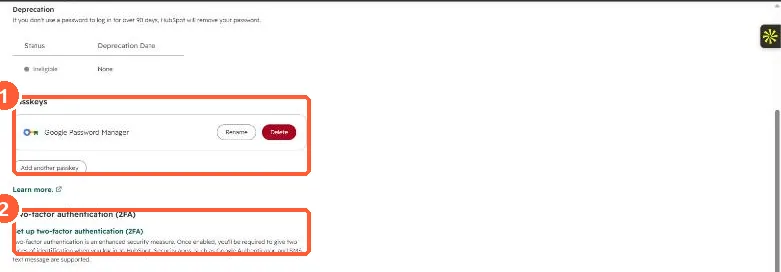

Short answer
On the 2FA screen, click Reset authentication device, then Request admin recovery. You get an email with a code to share with a Super Admin, who can then reset your 2FA and passkeys. HubSpot's KB says a Super Admin can only reset another user's 2FA after that user starts the request. If admin recovery is not offered, the next options are photo ID verification and then HubSpot support. To avoid this, set up a primary and a secondary 2FA method and save your backup codes.
1. Where your login security lives
Your own security settings are under Settings, General, Security. In my demo portal the page shows a saved passkey and the two-factor authentication setup link.


2. Who gets the recovery email
- With one HubSpot account, the Super Admins in that account.
- With several accounts, the Super Admins of the account you have had access to longest.
- With many Super Admins, the first 25 added to the account.
The login screen lists who will be notified before you send the request.
3. Prevent the next lockout
- Set up both a primary and a secondary 2FA method, and download the backup codes.
- Keep more than one active Super Admin, and make sure they are not all relying on the same device.
- Passkeys are stored by your device or password manager, not HubSpot. If you lose one, recover it through that provider. See account login security settings.